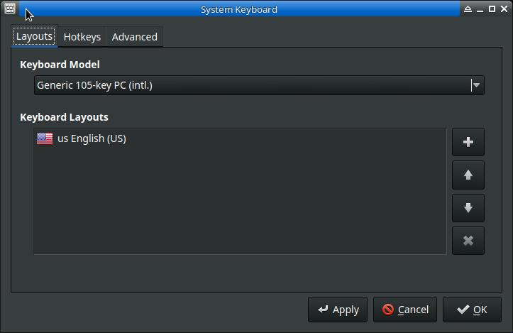
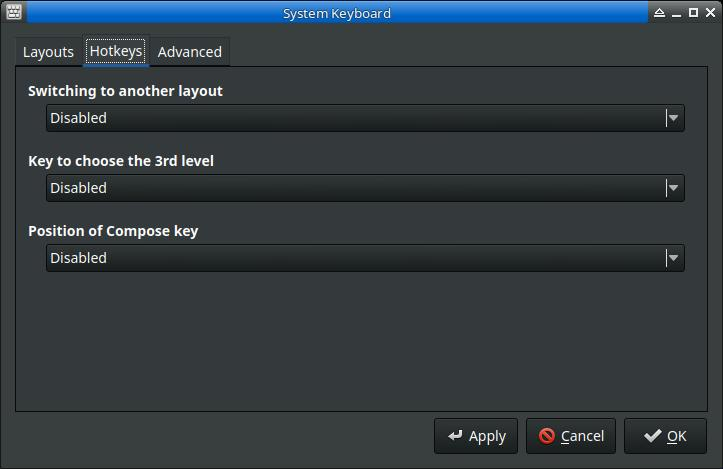
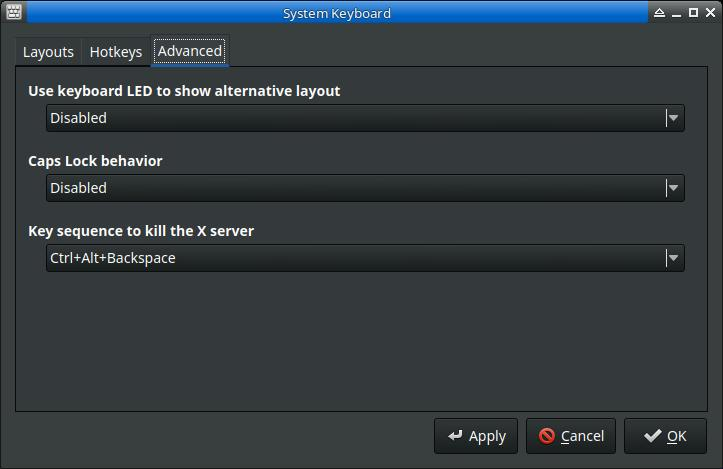

System-kebyoard-qt allows the user an easy interface to setting the default system keyboards.
The main screen allows the user to change the main hardware keyboard as well as reorder keyboards and variants. Keyboards at the top of the variant list will be new default, and the others in the list are switchable.
Selecting the + button will display the add keyboard and variant dialog. Keyboard layouts and variants are selectable from the combo boxes.

On this tab the user can set the keyboard layout switch key combo, the third level key, and the Compose key.
The user may select certain key combinations specific to working in X, including LED behavior, Caps Lock Behavior, and the Kill X key combo.
Development history: Nite Coder and MX Team 2020